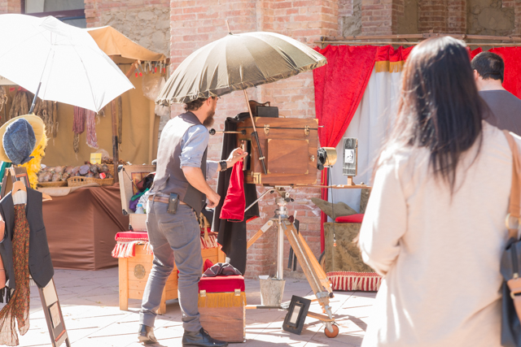
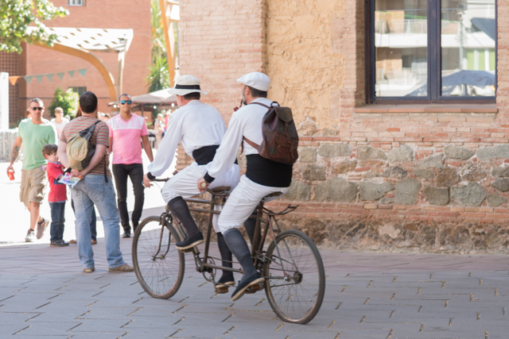
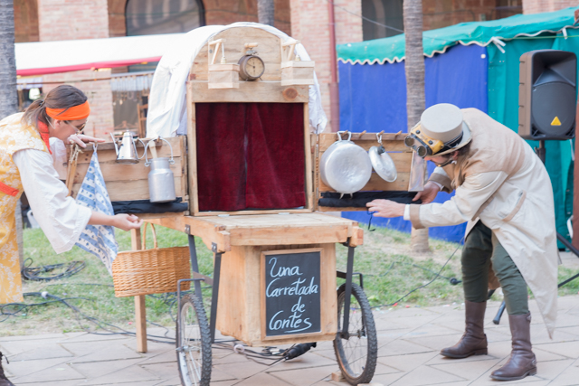
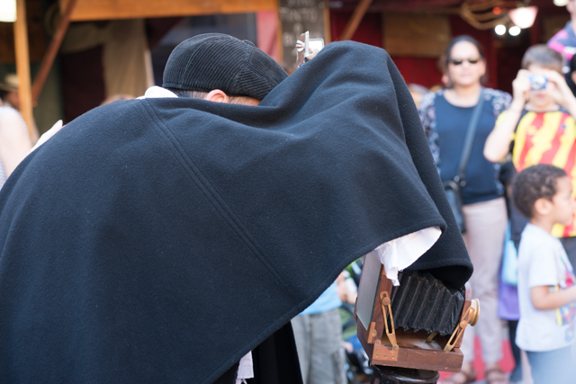

El barri del Turó de la Peira
Nou Barris es un distrito barcelonés que se encuentra entre la sierra de Collserola y los distritos de Sant Andreu y Horta-Guinardó. Los trece barrios que forman el distrito fueron un punto de acogida muy importante de la inmigración española obrera que vino a la ciudad entre los años cincuenta y sesenta del siglo pasado. Por eso uno de los rasgos más representativos de la zona es la interculturalidad, es decir, la convivencia entre la cultura y las tradiciones catalanas y las foráneas.
Todos los años, el distrito municipal, gracias a la colaboración de asociaciones de vecinos, entidades y comerciantes, organiza la fiesta mayor, con actividades muy variadas para mayores y pequeños que reflejan la diversidad cultural de Nou Barris. Encontramos castellers, habaneras, pasacalles, conciertos, bailes, grandes comidas, teatro, competiciones y un buen número de actividades infantiles, entre otras propuestas.
Con la fiesta mayor, del 12 al 17 de mayo, Nou Barris se llenará de color y optimismo. Durante estos días, la cultura y la diversión transformarán la cotidianidad en la alegría de vivir en un barrio coloreado que disfruta activamente de su gran fiesta ciudadana. Este año, como es tradicional, la Fiesta Mayor de Nou Barris reúne un conjunto de propuestas para todos: conciertos, bailes, actividades infantiles y deportivas, el mercado modernista, la muestra de mercados, el primer encuentro de música instrumental, así como el encuentro de gigantes y el espectáculo de luz y color en la fuente mágica de Manuel de Falla.
También incluye varios actos de conmemoración del centenario de la construcción del edificio del Instituto Mental que actualmente acoge la Sede del Distrito, como visitas guiadas y una exposición especialmente diseñadas para esta celebración. Todos los vecinos y vecinas podrán disfrutar estos días de un montón de actividades culturales y festivas para todas las edades, organizadas con el esfuerzo y la ilusión de las entidades y equipamientos del distrito. Os invitamos a consultar el programa.
Participa y disfruta de nuestra Fiesta Mayor!